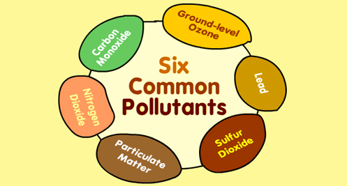

What are the common air pollutants around?

Carbon Monoxide (CO)
Fuel combustion from vehicles and engines.
Reduces the amount of oxygen reaching the body’s organs and tissues; aggravates heart disease, resulting in chest pain and other symptoms.
Ground-level Ozone (O3)
Secondary pollutant formed by chemical reaction of volatile organic compounds (VOCs) and NOx in the presence of sunlight.
Decreases lung function and causes respiratory symptoms, such as coughing and shortness of breath, and also makes asthma and other lung diseases get worse.
Lead (Pb)
Smelters (metal refineries) and other metal industries; combustion of leaded gasoline in piston engine aircraft; waste incinerators (waste burners), and battery manufacturing.
Damages the developing nervous system, resulting in IQ loss and impacts on learning, memory, and behavior in children. Cardiovascular and renal effects in adults and early effects related to anaemia.
Nitrogen Dioxide (NO2)
Fuel combustion (electric utilities, big industrial boilers, vehicles) and wood burning.
Worsens lung diseases leading to respiratory symptoms, increased susceptibility to respiratory infection.
Particulate Matter (PM)
This is formed through chemical reactions, fuel combustion (e.g., burning coal, wood, diesel), industrial processes, farming (plowing, field burning), and unpaved roads or during road constructions.
Short-term exposures can worsen heart or lung diseases and cause respiratory problems. Long-term exposures can cause heart or lung disease and sometimes premature deaths.
Sulfur Dioxide (SO2)
SO2 comes from fuel combustion (especially high-sulfur coal); electric utilities and industrial processes as well as natural occurances like volcanoes.
Aggravates asthma and makes breathing difficult. It also contributes to particle formation with associated health effects.